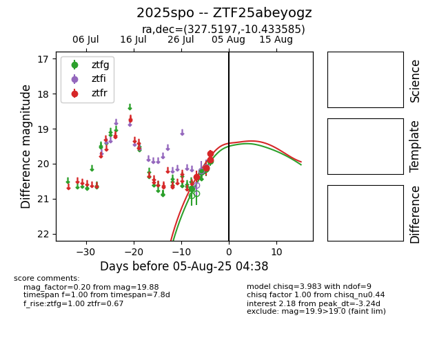

Target 2025spo at 2025-08-05 04:38, see:
FINK: fink-portal.org/2025spo
Lasair: lasair-ztf.lsst.ac.uk/objects/2025spo
ALeRCE: alerce.online/object/2025spo
TNS: wis-tns.org/object/2025spo
YSE: ziggy.ucolick.org/yse/transient_detail/2025spo
alt names
ZTF25abeyogz (ztf,fink)
2025spo (tns,yse)
coordinates:
equatorial (ra, dec) = (327.5197,-10.43359)
galactic (l, b) = (45.3505,-44.25132)
photometry
last ztfg=19.92, ztfr=19.88
4 ztfg, 4 ztfr detections
